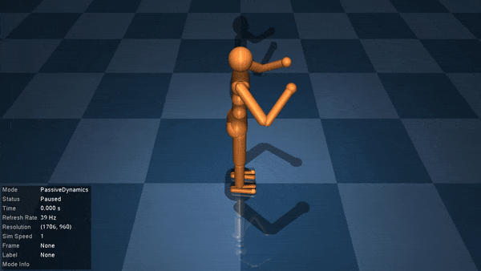

Getting Started
Installation
To install MuJoCo.jl, simply run the following code in a Julia REPL:
import Pkg
Pkg.add("MuJoCo.jl")This will download and install the package, along with the underlying C library. We highly recommend activating a project to manage dependencies - see the docs for more information.
Once installed, you can load the package in the REPL just like any other Julia package. To use the visualiser and see your MuJoCo models in action, you will need to install some additional dependencies with
using MuJoCo
install_visualiser()Basic Usage
You should now be able to load in and play around with any MuJoCo model of your choosing. You can create your own MuJoCo models with the MJCF modelling language, but for now we'll load in a model of a humanoid for demonstration purposes.
using MuJoCo
model, data = MuJoCo.sample_model_and_data()
@show typeof(model), typeof(data)(Model, Data)The Model and Data types encode all the information required to simulate a model in MuJoCo, and are wrappers of the mjModel and mjData structs in the C API, respectively. We can directly access any data from these structs:
println("Simulation timestep: ", model.opt.timestep)
println("Positions of joints: ", data.qpos)Simulation timestep: 0.005
Positions of joints: [0.0; 0.0; 1.282; 1.0; 0.0; 0.0; 0.0; 0.0; 0.0; 0.0; 0.0; 0.0; 0.0; 0.0; 0.0; 0.0; 0.0; 0.0; 0.0; 0.0; 0.0; 0.0; 0.0; 0.0; 0.0; 0.0; 0.0; 0.0;;]We can also directly read and write from/to these fields. However, we cannot directly overwrite any arrays. Instead, we can use Julia's broadcasting to set values as we see fit. Let's write a function that inputs random control torques to the humanoid's joints.
function random_controller!(m::Model, d::Data)
nu = m.nu
d.ctrl .= 2*rand(nu) .- 1
return nothing
endrandom_controller! (generic function with 1 method)We can now simulate motion of the humanoid under this control scheme. Let's simulate over 100 time-steps.
for t in 1:100
random_controller!(model, data)
step!(model, data)
endAt each time-step, random_controller! sets the control signal to some random value, and step! calls the MuJoCo physics engine to simulate the response of the system. step! directly modifies the data struct. For example, looking at data.qpos again shows that the joints have all moved.
println("New joint positions: ", data.qpos)New joint positions: [-0.0021574700790556543; 0.000858101172879813; 0.8272427361630172; 0.9795992374642234; 0.08372375860647698; -0.056517602018050485; 0.17372802556422626; -0.21411466327044612; -0.40876530936651334; -0.36311567666209077; 0.15768531543386477; -0.1453016219216078; -0.1258175162560627; -2.3989213582424305; -0.4911387287352141; -0.8325813980809033; -0.0361955942471055; -0.26714480313500444; -0.007910416651108289; -2.5495906327916553; 0.5257821536549718; -0.8121027439537024; 0.7412610151510891; -1.4770959398696744; 0.89400356229581; 0.5811618827366134; -0.5695541578096686; -1.924115523764815;;]After finishing our initial simulations, we can re-set the model back to its starting position by calling mj_resetData, one of the underlying C library functions. Any of the functions listed in the LibMuJoCo Index can be used just as they are described in the MuJoCo documentation.
mj_resetData(model, data)
println("Reset joint positions: ", data.qpos)Reset joint positions: [0.0; 0.0; 1.282; 1.0; 0.0; 0.0; 0.0; 0.0; 0.0; 0.0; 0.0; 0.0; 0.0; 0.0; 0.0; 0.0; 0.0; 0.0; 0.0; 0.0; 0.0; 0.0; 0.0; 0.0; 0.0; 0.0; 0.0; 0.0;;]Visualising a Model
Of course, the best way to understand what a MuJoCo model is doing is to visualise it. To use the visualiser, simply initialise it and call visualise!. We can test our controller by passing in our function via the controller keyword.
init_visualiser()
visualise!(model, data, controller=random_controller!)
Press F1 for help after running the visualiser to print the available options in a terminal. Some of the most interesting are:
- Press
CTRL+RightArrow(orCMDfor Mac) to cycle between the passive dynamics and the controlled motion - Press
SPACEto pause/unpause - Double-click on an object select it
CTRL+RightClickand drag to apply a force- Press
Backspaceto reset the model - Press
ESCto exit the simulation
Visualising a Trajectory
Sometimes it will be more convenient to simulate the motion of a MuJoCo model and save its response for later analysis. The visualiser includes a Trajectory mode to enable this. Let's reset! our humanoid model and set its initial height to 2 metres above the ground.
reset!(model, data)
data.qpos[3] = 2
forward!(model, data) # Propagate the physics forwardThe motion of every MuJoCo model can be described by some physical state vector consisting of the positions and velocities of its components, and the state of its actuators. We have included get_physics_state and set_physics_state! to allow users to record (and set) the states of a model during simulation. Let's simulate our humanoid for another 100 timesteps and record its state.
tmax = 400
nx = model.nq + model.nv + model.na # State vector dimension
states = zeros(nx, tmax)
for t in 1:tmax
states[:,t] = get_physics_state(model, data)
step!(model, data)
endWe'll also go back and save the humanoid states under our random controller.
reset!(model, data)
ctrl_states = zeros(nx, tmax)
for t in 1:tmax
ctrl_states[:,t] = get_physics_state(model, data)
random_controller!(model, data)
step!(model, data)
endWe can now play back either the passive or controlled humanoid motion whenever we like using the Trajectory mode in the visualiser. This allows us to re-wind the simulation, simulate it backwards, skip forward/backwards a few frames, and add some cool visualisation features.
visualise!(model, data, trajectories = [states, ctrl_states])
You might find the following tips useful:
- Press
CTRL+RightArrow(orCMDfor Mac) to cycle between the passive dynamics and the saved trajectories - Press
F1to see the newTrajectorymode button and mouse options, including:- Press
UPorDOWNto cycle between trajectories - PRESS
CTRL+Rfor reverse mode - Press
CTRL+Bto turn burst-mode on - Press
CTRL+Dto add a doppler shift
- Press
We strongly recommend saving trajectories for later visualisation if you're simulating any particularly complicated tasks in MuJoCo. You can start up the visualiser with all three of the passive dynamics, controlled dynamics, and saved trajectories. See visualise! for details.
Happy visualising!